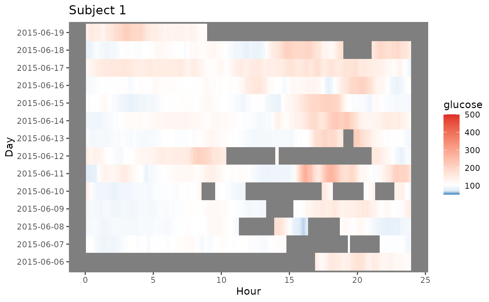
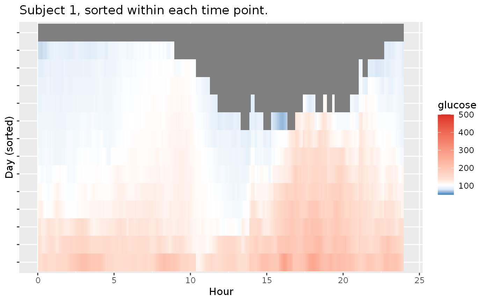
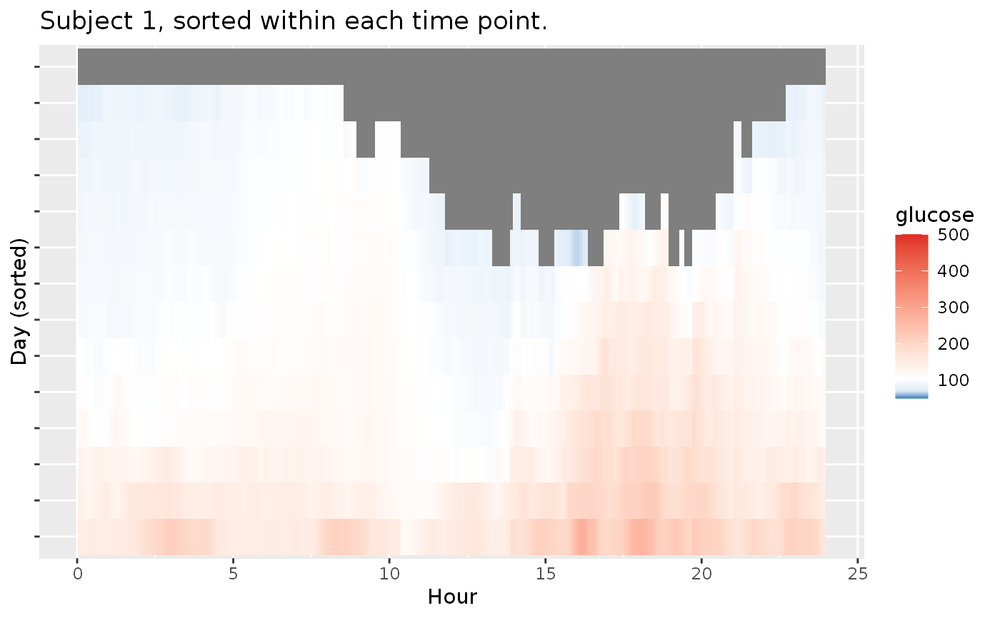
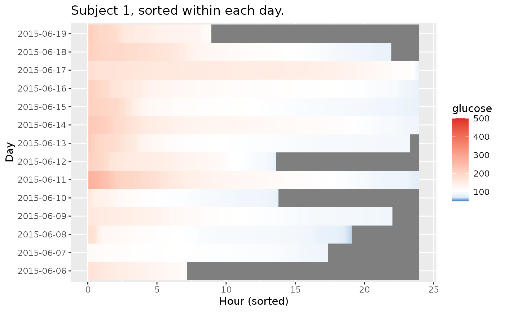
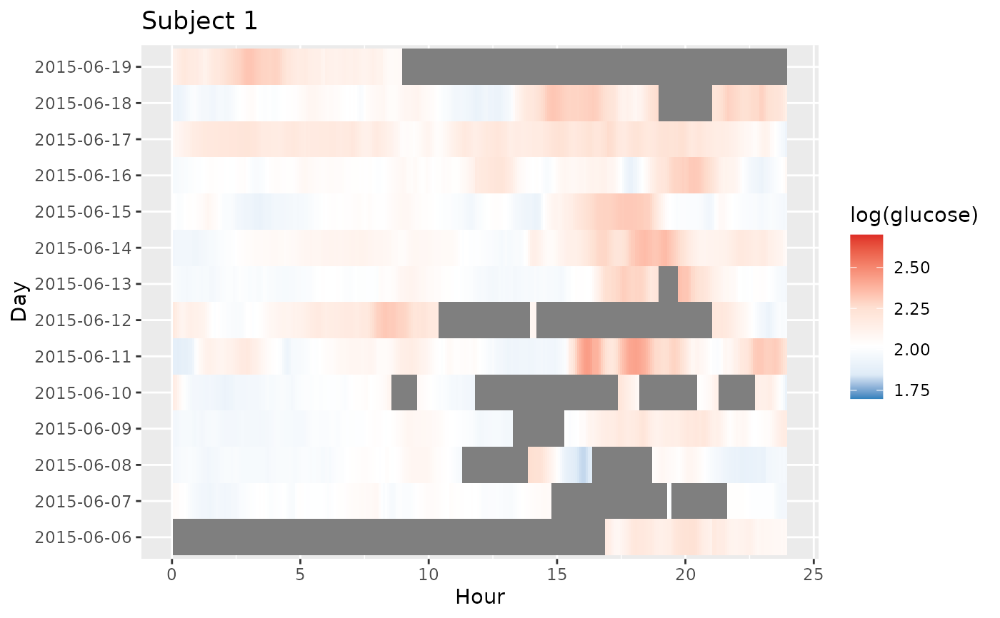

Lasagna plot of glucose values for 1 subject aligned across times of day
Source:R/lasagna_plots.R
plot_lasagna_1subject.RdLasagna plot of glucose values for 1 subject aligned across times of day
Arguments
- data
DataFrame object with column names "id", "time", and "gl".
- lasagnatype
Default: "unsorted". String corresponding to plot type, currently supported options are 'unsorted' for an unsorted single-subject lasagna plot, 'timesorted' for a lasagna plot with glucose values sorted within each time point across days, and 'daysorted' for a lasagna plot with glucose values sorted within each day across time points.
- limits
The minimal and maximal glucose values for coloring grid which is gradient from blue (minimal) to red (maximal), see
scale_fill_gradient2)- midpoint
The glucose value serving as midpoint of the diverging gradient scale (see
scale_fill_gradient2). The default value is 105 mg/dL. The values above are colored in red, and below in blue in the default color_scheme, which can be adjusted.- LLTR
Lower Limit of Target Range, default value is 70 mg/dL.
- ULTR
Upper Limit of Target Range, default value is 180 mg/dL.
- dt0
The time frequency for interpolated aligned grid in minutes, the default will match the CGM meter's frequency (e.g. 5 min for Dexcom).
- inter_gap
The maximum allowable gap (in minutes) for interpolation of NA glucose values. The values will not be interpolated between the glucose measurements that are more than inter_gap minutes apart. The default value is 45 min.
- tz
A character string specifying the time zone to be used. System-specific (see
as.POSIXct), but " " is the current time zone, and "GMT" is UTC (Universal Time, Coordinated). Invalid values are most commonly treated as UTC, on some platforms with a warning.- color_scheme
String corresponding to the chosen color scheme. By default, 'blue-red' scheme is used, with the values below `LLTR` colored in shades of blue, and values above `ULTR` colored in shades of red. The alternative 'red-orange' scheme mimics AGP output from
agpwith low values colored in red, in-range values colored in green, and high values colored in yellow and orange.- log
Logical value indicating whether log of glucose values should be taken, default values is FALSE. When log = TRUE the glucose values, limits, midpoint, LLTR, and ULTR will all be log transformed.
- static_or_gui
One of "ggplot" or "plotly". Default: "plotly". Returns either a ggplot (static image) or Plotly chart (interactive GUI).
References
Swihart et al. (2010) Lasagna Plots: A Saucy Alternative to Spaghetti Plots, Epidemiology 21(5), 621-625, doi:10.1097/EDE.0b013e3181e5b06a
Examples
plot_lasagna_1subject(example_data_1_subject)
#> Warning: Removed 14 rows containing missing values or values outside the scale range
#> (`geom_tile()`).

plot_lasagna_1subject(example_data_1_subject, color_scheme = 'red-orange')
#> Warning: Removed 14 rows containing missing values or values outside the scale range
#> (`geom_tile()`).

plot_lasagna_1subject(example_data_1_subject, lasagnatype = 'timesorted')
#> Warning: Removed 14 rows containing missing values or values outside the scale range
#> (`geom_tile()`).

plot_lasagna_1subject(example_data_1_subject, lasagnatype = 'daysorted')
#> Warning: Removed 14 rows containing missing values or values outside the scale range
#> (`geom_tile()`).

plot_lasagna_1subject(example_data_1_subject, log = TRUE)
#> Warning: Removed 14 rows containing missing values or values outside the scale range
#> (`geom_tile()`).
